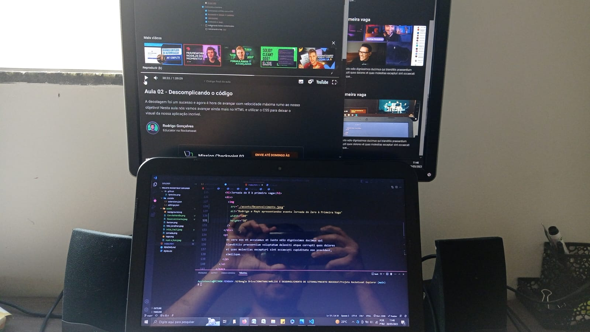
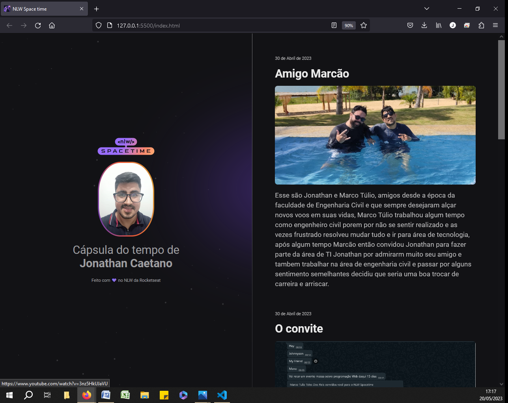

15 a 21 de Maio de 2023
Desenvolvimento...

O desenvolvimento iniciou-se no dia 15 de Maio, durante o
desenvolvimento do projeto, pudemos assistir 5 aulas que foram muito
satisfatórias e bem planejadas, aprendemos muitas coisas, a didática
do Prof Rodrigo e incrível, o material fantástico, e a progressão foi
automática, altos e baixos, mas não desisti consegui corrigir erros,
cada detalhe foi imperdível.
21 de Maio de 2023
Projeto concluído com muito orgulho!

E este foi o resultado das 5 big aulas que tivemos com os professores
Rodrigo Gonçalves e Mayk Brito e empoucos dias oconhecimento que era
quase 0 passou a alguma coisa, e foi alguma coisa de respeito.
Agradeço a Rockseat pela esperiência, pelo cuidado no planejamento,
desde o setup da preparação do ambiente até a publicação do Projeto e
pelo amigo Marcão pelo convite, sei que é apenas o começo e que não
vou lembra 80% dos códigos que aprendi, mas agora tenbho certeza que
estou no caminho certo e queconsigo ir bem mais longe.